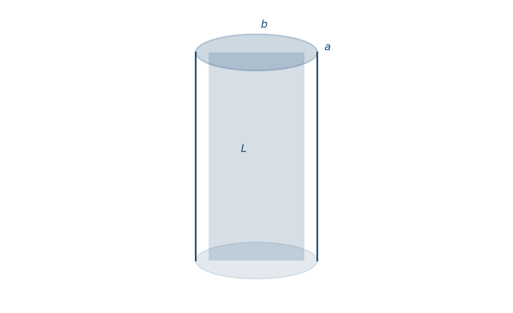
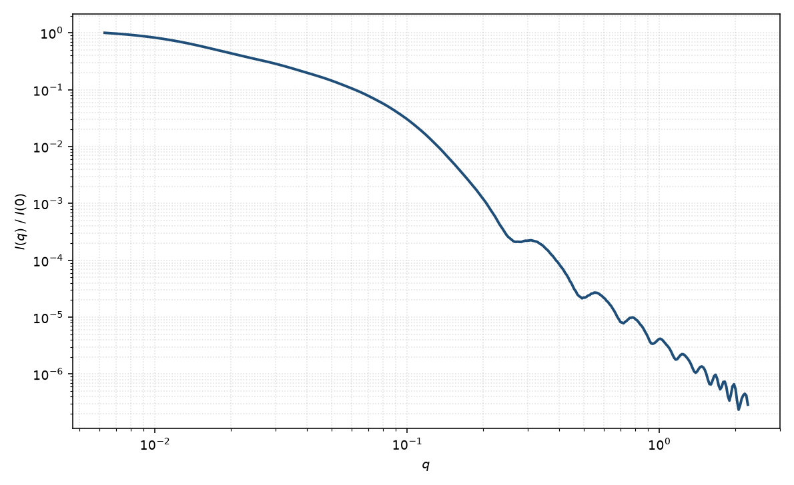

椭圆截面圆柱
elliptical cylinder
适用场景
截面为椭圆（半轴 $a$、$b$）、沿轴长度为 $L$ 的直柱。适用于压扁的纳米棒、带状胶束、以及圆截面圆柱无法同时拟合 Bessel 极小位置与深度的刚性长颗粒。
细长时中间区仍是 $q^{-1}$；轴比偏离 1 会抹平截面振荡。若颗粒还会弯曲，应改用椭圆截面柔性圆柱。
物理图像
Fournet 圆柱振幅中的 $qR\sin\alpha$ 换成 $q R_{\mathrm{eff}}(\psi)\sin\alpha$，再对截面方位 $\psi$ 与极角 $\alpha$ 平均。体积 $V=\pi a b L$。回转半径 $R_g^2=(a^2+b^2)/4+L^2/12$。
二维图案中，截面长轴与短轴给出不同的赤道弧调制；粉末平均只留下轴比阻尼。
示意图


核心公式
出发点
稀释、取向无规的均匀粒子，相干散射振幅是衬度对平面波相位的体积分
$$F(\mathbf{q})=\int_V \Delta\rho(\mathbf{r})\,\mathrm{e}^{i\mathbf{q}\cdot\mathbf{r}}\,\mathrm{d}^3r.$$椭圆截面柱在 $|z|\le L/2$、$(x/a)^2+(y/b)^2\le 1$ 内 $\Delta\rho$ 为常数。轴向积分仍给出 $\mathrm{sinc}$；截面不再圆对称，须引入截面长轴相对 $\mathbf{q}_\perp$ 的方位角 $\psi$。
推导
作 $x=a\xi$、$y=b\eta$，椭圆映成单位圆。径向积分回到圆柱 Bessel，只是把半径换成该方位上的有效半径
$$R_{\mathrm{eff}}(\psi)=\sqrt{a^2\cos^2\psi+b^2\sin^2\psi}.$$于是振幅与圆截面圆柱同形，体积 $V=\pi ab L$：
$$F(q,\alpha,\psi)=\Delta\rho\,V\cdot\frac{2J_1(q R_{\mathrm{eff}}\sin\alpha)}{q R_{\mathrm{eff}}\sin\alpha}\cdot\frac{\sin(qL\cos\alpha/2)}{qL\cos\alpha/2}.$$$q\to 0$ 时 $F(0)=\Delta\rho V$。无规粉末须对极角与截面滚转同时平均：
$$P(q)=\frac{\displaystyle\int_0^{\pi/2}\sin\alpha\,\mathrm{d}\alpha\int_0^{\pi}\mathrm{d}\psi\,|F(q,\alpha,\psi)|^2}{\displaystyle\int_0^{\pi/2}\sin\alpha\,\mathrm{d}\alpha\int_0^{\pi}\mathrm{d}\psi\,|F(0,\alpha,\psi)|^2}.$$$a=b=R$ 时 $R_{\mathrm{eff}}$ 与 $\psi$ 无关，回到均匀圆柱。稀释强度 $I(q)=n(\Delta\rho)^2 V^2 P(q)+B$。
低 $q$ 与渐近
截面二阶矩给出 $R_g^2=(a^2+b^2)/4+L^2/12$（圆截面 $a=b=R$ 时回到 $R^2/2+L^2/12$）。Guinier $P=1-q^2 R_g^2/3+\cdots$ 在 $qR_g\lesssim 1$ 可用。
细长极限中间区仍 $\sim q^{-1}$。轴比 $a/b\neq 1$ 把不同 $\psi$ 的 Bessel 零点错开，粉末平均后截面振荡变浅、极小不再对应单一 $qR$。大 $q$ 尖锐界面仍趋近 Porod $q^{-4}$。
参数表
| 参数 | 符号 | 含义 | 单位 | 典型范围 |
|---|---|---|---|---|
| 截面半轴 | $a$, $b$ | 椭圆截面长、短半轴 | Å 或 nm | 5–400 Å，$a\ge b$ |
| 长度 | $L$ | 轴向长度 | Å 或 nm | 20–5000 Å |
| 取向角 | $\theta,\phi$ | 轴及截面长轴方位（二维） | 度 | 由取向分布约束 |
| 衬度 | $\Delta\rho$ | 相对溶剂 SLD 差 | Å$^{-2}$ | 均匀柱 |
| 标度 / 本底 | $\mathrm{scale}$, $B$ | 前置因子与本底 | 与强度单位一致 | 实验相关 |
拟合注意
轴比与半径多分散都钝化高 $q$ 振荡。一维数据上两者几乎不可分；有二维弧或电镜截面时再放开 $a/b$。
长度多分散改 $q^{-1}$ 区，与截面轴比正交，通常可以同时放一个长度宽度和一个截面参数。取向 $\theta,\phi$：二维还需要截面滚转角。
磁性：椭圆截面的磁退磁因子各向异性，磁 SLD 与核 SLD 仍须分通道；不要把磁各向异性误读成几何轴比。
相近模型
参考文献
- Guinier, A.; Fournet, G. Small-Angle Scattering of X-rays. Wiley: New York, 1955.
- Pedersen, J. S. Analysis of small-angle scattering data from colloids and polymer solutions: modeling and least-squares fitting. J. Appl. Cryst. 1997, 30, 339–354. DOI: 10.1107/S0021889897002532